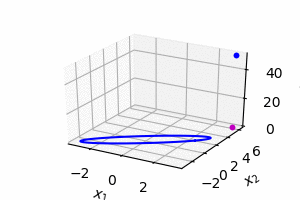
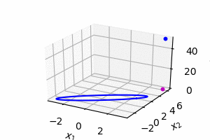
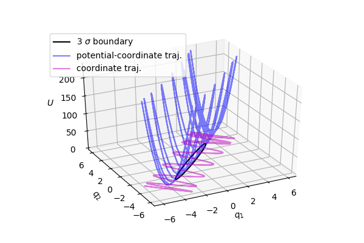
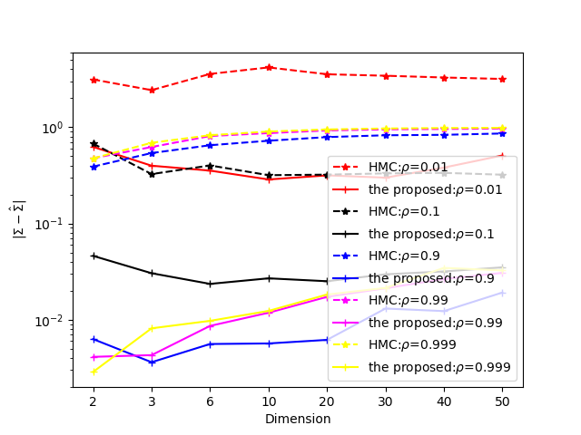
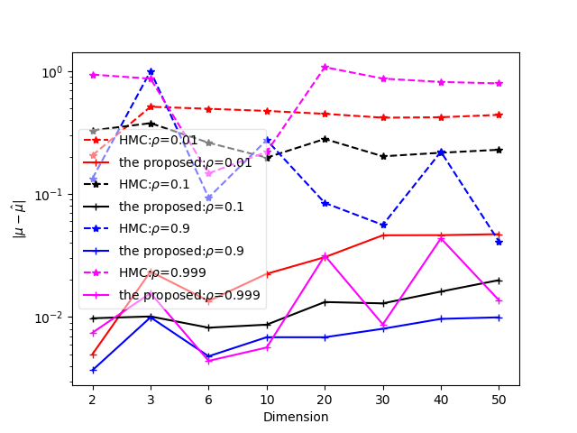

本文介绍了哈密顿蒙特卡洛的概念、方法、存在的问题和修正方案。
例子
哈密顿蒙特卡洛算法在物理领域和统计领域有广泛的应用。根据已知数据估计模型的参数，其过程可以用一个简单的例子来说明。 假如一个人接收短信的数量 \(k\) 服从poisson分布:
\[P(k|q)=\frac{q^k e^{-q}}{k!}\]
其中参数 \(q\) 为概率的参数。实际上一般是知道短信数量 \(k\) ，希望估计参数 \(q\) 的值。
由于\(q\) 为 \(k\) 的期望，其值大于零，不妨假设参数 \(q\) 的先验服从指数分布：
\[P(q)=\lambda \cdot e^{-\lambda x}\]
其中 \(\lambda\) 为先验概率的参数，这里是一个预设常数。 根据贝叶斯公式，参数 \(q\) 的后验概率：
\[P(q|k) = \frac{P(k|q)\cdot P(q)}{P(k)}\]
由于metropolis算法只需要计算概率之间的比值:
\[\frac{P(q_1|k)}{P(q_2|k)}\]
因此不需要计算后验概率的分母项，只需要计算似然函数和先验概率的乘积，这个函数是进行抽样的基础：
\[f(q) = P(k|q)\cdot P(q)=\frac{q^k e^{-q}}{k!} \cdot \lambda \cdot e^{-\lambda x}\]
如果已知短信数量 \(k\) ，希望估计参数 \(q\) 的值，那么显然 \(q\) 不一定等于 \(k\), 而是分布于一个区间。 这时可以使用蒙特卡洛来抽样出一系列的参数值来表示其所服从的概率。其实这种方法也可以抽样出其它连续变量的概率，如以下为（未归一化的）多维正态概率： \[f(q)=e^{-\frac{(q-\mu)\cdot \Sigma^{-1}\cdot (q-\mu)}{2}}\]
这种方法的唯一要求是势能函数对变量具有导数。
根据玻尔兹曼，能量和概率有如下关系：
\[U(q)=-\log f(q)\]
其中 \(U\) 为势能，\(q\) 为位置变量。 由于势能是位置的连续函数，因此可以求出其导数。如果 \(U\) 是 \(q\) 的高维非线性函数，则可以使用反向求导技术求出导数。
哈密顿系统中，总能量等于动能和势能之和：
\[H=K+U\]
哈密顿公式指出了变量对时间的导数和能量对变量的偏导数之间具有如下关系 \[\dot q=\frac{dK}{dp}\] \[\dot p=-\frac{dU}{dq}\]
动能一般取二次函数:
\[K(p)=\frac{p^T p}{2}\]
通过哈密顿仿真得到轨迹，在轨迹上使用Metropolis算法进行抽样，可以获得 \(P(q|k)\) 的参数。
这里先回顾Metropolis算法。 与krauth的statistical mechanics algorithm and computation一样，我们采用扔皮球的方式进行讨论。
此时从位置a扔一个皮球，假设皮球只能落在位置a,b,c，而且皮球将等可能地落在这三个位置上。
系统处于a,b等位置的静态概率，其实就对应于上边的 \(f(q)\) ： \[\pi(a),\pi(b),\dots\]
假设从位置a移动到位置a,b和c以后，根据一个概率决定是否接受这个移动。 如果位置之间的跳转概率不等，那么总的转移概率\[\mathcal P(a \to b)\]分为两部分，即从皮球从位置a出发，落在b的概率，以及接受这个跳转的概率。 \[\mathcal P(a\to b)=\mathcal A(a \to b)\cdot p(a \to b)\]

于是得到Metropolis-Hasting算法: \[p(a\to b)=\min[1,\frac{\pi(b)}{\mathcal A(a\to b)}\frac{\mathcal A(b \to a)}{\pi(a)}]\] 其中\[\mathcal A(a\to b)\]是从位置a移动到位置b的概率,而\[p(a\to b)\]是接受这个移动的接受概率。
在哈密顿动力学中，如果两个状态能够相互转换，并且总能量相同，则二者的相互跳转概率亦相同: \[\mathcal A(a\to b)=\mathcal A(b \to a)\] 这时得到Metropolis算法: \[p(a\to b)=\min[1,\frac{\pi(b)}{\pi(a)}]\]
抽样多维正态分布，如果将HMC算法写成代码，大概为如下形式:
SIGMA = np.array([[1,.95],[.95,1]]) # 能量函数 U = lambda q: np.dot(q,np.linalg.solve(SIGMA,q),q)/2 dU = lambda q: np.linalg.solve(SIGMA,q) K = lambda p: np.dot(p,p)/2 dK = lambda p: p # 初始位置和动量 qStar = np.random.randn(2) pStar = np.random.randn(2) for i in range(SIMULATIONS): # s1: q1, p1 q1 = qStar # 重新生成动量 pStar = np.random.randn(2) # s2: q1, p2 H0 = K(pStar) + U(qStar) # 哈密顿仿真 for i in range(STEPS): qStar = qStar + delta*dK(pStar) pStar = pStar - delta*dU(qStar) # s3: q3, p3 H = K(pStar) + U(qStar) # HMC's "metropolis" 算法 alpha = min(1,np.exp(H0 - H)) if alpha < rand(): qStar = q1 # 抽样出样本 yield qStar
问题
其实哈密顿蒙特卡洛可能有以下几个问题，导致其准确率和稳定度都不甚理想:接受概率、不稳定、轨迹震荡。对应的解决方法大致为：保持总能量守恒，使用Metropolis公式，进行位置和动量变换。
接受概率
算法在内循环重新生成动量，在这之前之前动量p1（上次仿真的 \(p_*\) ），对应于状态s1，这之后之后动量变为p2，对应于状态s2。这两个状态的位置没有变化，都是q1。 算法随后运行哈密顿仿真。算法仿真前总能量 \(H_0\) ，仿真后的总能量为H。
由于哈密顿仿真保持总能量不变，因此（从原则上）仿真前后的总能量相同，但具体的位置和动量都有变化。仿真后对应状态s3。
由于状态s2到s3为哈密顿仿真，其相互跳转概率相等： \[\mathcal A(s_2\to s_3) = \mathcal A(s_3\to s_2)\]
实际上，当考虑哈密顿仿真的数值误差时，即 \(\mathcal A(s_2 \to s_3) \ne \mathcal A(s_3 \to s_2)\) ,会得到相似的实验结果。
状态s1和s2之间位置相同，所以势能相同，二者的区别在于动量及动能不同。 \[\mathcal A(s_1\to s_2) = P(K(p_2)|K(p_1))\] \[\mathcal A(s_2\to s_1) = P(K(p_1)|K(p_2))\] 因此得到： \[\frac{\mathcal A(s_1\to s_3)}{\mathcal A(s_3\to s_1)}=\frac{\mathcal A(s_1\to s_2)}{\mathcal A(s_2\to s_1)} = \frac{P(K(p_2))}{P(K(p_1))}=e^{K(p_1)-K(p_2)}\]
根Metropolis-Hastings，可知，接受概率的公式应当为: \[p(s_1 \to s_3)=\min(1,\frac{\pi(s_3)}{A(s_1\to s_3)}\frac{A(s_3\to s_1)}{\pi(s_1)})\] 由于： \[\pi(s_1)=e^{-U(q_1)}\] \[\pi(s_3)=e^{-U(q_2)}\] 将前面几个公式代入到上式，得到： \[p(s_1 \to s_3)=\min(1,e^{K(p2)+U(q1)-U(q2)-K(p1)}\] 哈密顿蒙特卡洛所采用的接受概率公式为： \[p(s_1 \to s_3)=\min(1,e^{H(s_2)-H(s_3)})=\min(1,e^{U(q_1)+K(p_2)-U(q_2)-K(p_3)})\] 如果我们比较以上两个公式，就会发现二者不同，即HMC可能不满足Metropolis算法。 实际上，由于哈密顿仿真不改变能量，因此状态 \(s_2\) 和 \(s_3\) 总能量相等，即HMC的接受概率为常数1，也就是HMC没有使用Metropolis算法。
能量守恒
如下这个仿真，蓝色的是位置-势能轨迹，洋红色是位置轨迹，而黑色是势能（对应概率）的三倍标准差界限。 如果总能量守恒，则最大势能是一个常数，则仿真可以持续进行下去。反之,如果总能量不守恒:
- 总能量持续变大，导致仿真发散;
- 总能量持续变小，导致仿真停止。
 

因此保持能量守恒可以保证哈密顿蒙特卡洛方法的稳定。哈密顿蒙特卡洛算法有一个特点，即容易发散或者停止运行。发散和停止现象是由于该算法没有遵守破坏了能量守恒法则。算法的第三行会重新生成一个随机的动量，这时会改变动能，因此总能量也随之改变了。不断在不同仿真之间改变总能量可能导致总能量发散或者消失现象。
能量守恒HMC
如果对HMC算法进行修正，使其在重新生成动量的时候保持总能量守恒(即动能相同，p1和p2幅值相同)，则状态s1和状态s2的总能量相同，从而二者相互跳转概率相同。 从状态s2到s3运行哈密顿仿真，总能量不变，在不考虑数值误差的情况下，s2和s3之间相互跳转概率也相同。 因此状态s1和s3之间相互跳转概率相同。 \[\mathcal A(s_1\to s_3)=\mathcal A(s_3\to s_1)\] 根据Metropolis-Hastings公式，从状态s1到s3的接受概率为： \[p(s_1 \to s_3)=\min(1,\frac{e^{-U(q_2)}}{e^{-U(q_1)}})\]
因此在不同仿真之间保持总能量恒定的前提下，正确的接受概率的公式应当为： \[p(q_1 \to q_2)=\min(1,\frac{e^{-U(q_2)}}{e^{-U(q_1)}})\]
为了保持能量守恒，每次重新初始化动量以后，应当重新设置其向量半径。
根据恒定总能量和当前的势能，可以算出所需的动能： \[K(p)=\frac{p^T \cdot p}{2} = \frac{r^2}{2}=H-U(q)\]
由此得到动量向量的半径应当为： \[r=\sqrt{2(H-U(q))}\]
因此动量应当在半径为 \(r\) 的超球上均匀分布。对于物理空间中N个粒子总动能恒定的系统，可以称为（半径为r的）3N-1维球面 \(\mathbb{S}_R^{3N-1}\) 。综上所述，得到遵守能量守恒的哈密顿蒙特卡洛算法：
#总能量 H = U(xStar) + K(pStar) for i in range(SIMULATIONS): pStar = np.random.randn(2) #重新设置动量幅值 K0 = np.clip(H - U(xStar),1e-3,H) K1 = K(pStar) r0 = np.sqrt(K0/K1) pStar = pStar * r0 x0 = xStar for i in range(STEPS): xStar = xStar + delta*dK(pStar) pStar = pStar - delta*dU(xStar) # 修正的接受概率公式 alpha = min(1,np.exp(U(x0) - U(xStar))) if alpha < rand(): xStar = x0 yield xStar
轨迹震荡
修正后的哈密顿蒙特卡洛对于高维和高相关度的概率抽样结果仍然不甚理想，其原因与势能梯度有关。
例如，对如下协方差的二维正态分布进行哈密顿仿真，
\[\Sigma = \begin{bmatrix}1& 0.99 \\ 0.99 &1\\\end{bmatrix}\]
可以得到如下的轨迹图，其中蓝色为势能位置轨迹，黑色椭圆为概率的三倍标准差界限，洋红色为位置轨迹：

在概率最小主成分方向的势能梯度最大，仿真轨迹优先移动方向为最小主成分方向，导致轨迹与概率在空间的分布不一致。仿真轨迹无法快速遍历概率空间，结果是无法准确地抽样高维、高相关的概率。
消除这种现象的方法为：对相空间变量进行变换，使轨迹优先向着较大主成分的方向移动。通过同时进行坐标变换和动量变换，可以使得轨迹移动方向与概率的空间分布一致，从而获得理想的抽样轨迹，进而可以准确地对高相关度的概率进行抽样。
为了方便讨论，本文假设势能是正定二次型: \[U(q)=\frac{(q-\mu)^T \Sigma^{-1} (q-\mu)}{2}\] 动能一般采取二次函数，本文采取以下形式的动能： \[K(p)=\frac{p^T \Sigma p}{2}\] 以上定义的势能二次型矩阵和动能二次型矩阵为逆矩阵，因为这样可以产生理想的仿真轨迹：仿真轨迹与主成分方向一致。
根据以上的讨论，对于高相关的概率，在原来相空间内仿真轨迹不理想，因此改为在变换后的相空间内进行仿真，因而需要对位置和动量进行变换。设势能能可以表示为原变量q或者变换后的变量d： \[U(q) = \frac{(q-\mu)^T \Sigma^{-1} (q-\mu)}{2} = \frac{d^T d}{2}\] d和q之间有如下变换关系： \[d=\Sigma^{-\frac{1}{2}} (q-\mu)\] \[q=\Sigma^{\frac{1}{2}} d + \mu\] 类似的，动能可以表示为原变量p或者变换后的变量b： \[K(p)=\frac{p^T \Sigma p}{2}= \frac{b^T b}{2}\] 和b和p之间的变换关系： \[b=\Sigma^{\frac{1}{2}} p\] \[p=\Sigma^{-\frac{1}{2}} b\] 位置和动量的时间变化率存在以下变换关系： \[\dot d=\Sigma^{-\frac{1}{2}} \dot q\] \[\dot b=\Sigma^{\frac{1}{2}} \dot p\] 将哈密顿公式代入上式，得到在新的相空间(d,b)内进行仿真的哈密顿公式： \[\dot d= \Sigma^{-\frac{1}{2}} \frac{dK}{dp}\Bigr|_{p=\Sigma^{-\frac{1}{2}} b}\] \[\dot b= -\Sigma^{\frac{1}{2}} \frac{dU}{dq}\Bigr|_{q=\Sigma^{\frac{1}{2}} b + \mu}\]
算法实现
# 动能 K = lambda p: np.sum(p * np.dot(SIGMA,p), axis = 0)/2 dK = lambda p: np.dot(SIGMA, p) # 总能量 H = np.sum(U(xStar) + K(pStar)) # 变换 SIGMA_half = sqrtm(SIGMA) d2q = lambda d: np.dot(SIGMA_half, d) + MU q2d = lambda q: np.linalg.solve(SIGMA_half, q - MU) dq2dd = lambda dq: np.linalg.solve(SIGMA_half, dq) p2b= lambda p: np.dot(SIGMA_half, p) b2p = lambda b: np.linalg.solve(SIGMA_half, b) dp2db= lambda dp: np.dot(SIGMA_half, dp) while True: pStar = np.random.randn(2) K0 = np.clip(H - U(qStar),1e-3,H) K1 = K(p0) r0 = np.sqrt(K0/K1) # 保持能量守恒 pStar = pStar * r0 q0 = qStar # 变换到新的相空间 dStar = q2d(qStar) bStar = p2b(pStar) # 哈密顿仿真 for s in range(STEPS): dStar = dStar + dt*dq2dd(dK(b2p(bStar))) bStar = bStar - dt*dp2db(dU(q2d(qStar))) # 变换回原来的相空间 qStar = d2q(dStar) pStar = b2p(bStar) # 修正的接受概率公式 alpha = np.exp(np.clip(U(q0)- U(qStar),-20,0))
参数估计
到目前位置，我们都假定已经知道势能的参数μ 和Σ。
然而对于一个目标势能来说，这些参数是未知的，需要从抽样样本中估计出来。
这个过程就像一个循环，从样本中估计参数，然后更新势能函数，随后使得采样更加准确，然后估计出更准确的参数⋯。
从统计理论可知，正态分布的均值和方差的后验估计的具有确定的解析公式。
虽然我们研究的概率函数不一定服从正态分布，但我们可以假定其服从正态分布，从而利用上面所说的解析公式来更新均值和方差。 以下直接使用教材（Bayesian Data Analysis 3rd, p72）中的公式。
假定给定方差，均值的先验服从正态分布： \[\mu | \Sigma \sim N(\mu_0,\Sigma/\kappa_0)\]
假设方差的先验服从逆wishart分布： \[\Sigma \sim InvWishart_{\nu 0}(\Lambda_0^{-1})\]
则均值和方差的联合后验服从正态-逆wishart分布： \[p(\mu,\Sigma) \propto |\Sigma|^{((\nu_0+d)/2+1)}\text{exp}(-\frac{1}{2}\text{tr}(\Lambda_0 \Sigma^{-1})-\frac{\kappa_0}{2}(\mu - \mu_0)^T \Sigma^{-1}(\mu- \mu_0))\] 则得到如下更新公式。 自由度为： \[\kappa_n = \kappa_0 + n\] 中间变量为： \[ \Lambda_n = \Lambda_0 + S + \frac{\kappa_0 n}{\kappa_{0}+ n} (\bar x - \mu_0)(\bar x - \mu_0)^T\] 方差的后验估计为： \[\hat \Sigma=\frac{\Lambda_n}{\kappa_0+n-D-1}\] 均值的后验估计为 \[\hat \mu = \frac{\kappa_0 }{\kappa_0 +n}\mu_0 + \frac{n}{\kappa_0 + n} \bar x\] 这些符号的意义说明如下：
| 符号 | 说明 |
|---|---|
| \(\Lambda_0\) | 相当于先验 方差之和 |
| \(\kappa_0\) | 先验的自由度 |
| n | 批样本的大小 |
| q | 一批样本 |
| \(\bar q\) | 经验均值 |
| S | 散度矩阵 |
| \(\mu_0\) | 先验均值 |
| \(\hat \Sigma\) | 后验协方差估计 |
| \(\hat \mu\) | 后验均值估计 |
实验
我们使用一系列从一般到高度奇异的协方差的多维正态分布进行抽样,对角元为 \(\frac{1}{\rho}\) ，其它元素为 \(\rho\) ，其中 \(\rho\) 从0.01 变化到 0.999。当 \(\rho\) 为0.01时，对应的多维正态分布大致为超球。当 \(\rho\) 接近于1时(如0.999或者0.9），对应的多维正态分布大致类似针形。因此这个实验设置涵盖了不同类型的概率分布。
\[\Sigma = \begin{bmatrix}\frac{1}{\rho} & \cdots & \rho \\ \vdots & \ddots & \vdots\\ \rho & \cdots & \frac{1}{\rho}\\\end{bmatrix}\]
抽样结果的衡量标准是协方差矩阵的估计误差。实验分别对2维到50维正态分布分别进行抽样。
图中，虚线为HMC的估计误差，实线为修正方法估计误差，颜色相同线对应于为同一协方差矩阵，横坐标为变量的维度，纵坐标为协方差的估计误差。修正方法的估计误差大概比HMC的估计误差小一个到两个数量级，并且这个结论适用于多个维度。 高相关的协方差近似于1矩阵，HMC的估计误差接近1说明估计误差较大。

图中显示均值的估计误差。与上图相似，相同颜色的实线为修正方法产生的估计误差，而虚线为HMC产生的估计误差。修正方法的误差一般低于HMC误差一到两个数量级。 与修正方法相比，HMC估计误差不仅较大，而且在较大的范围内变动，说明HMC的估计结果不准确并且不够稳定。
